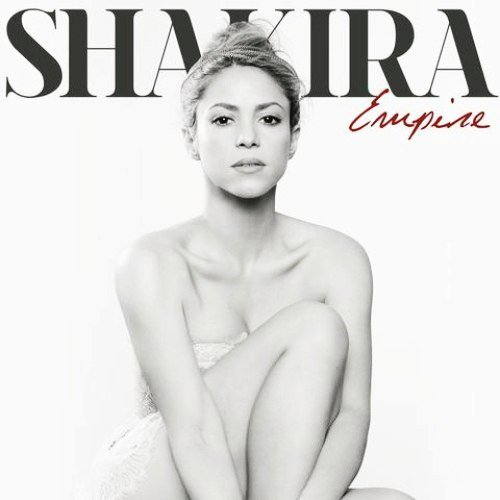
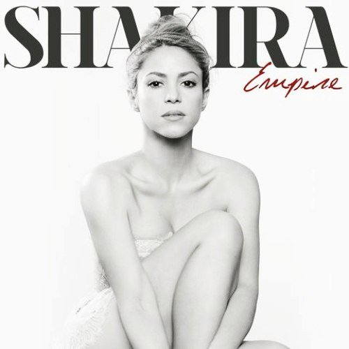

Shakira Fanpage
 

Shakira Bio
Shakira Isabel Mebarak Ripoll was born on February 2nd, 1977 in Barranquilla, Colombia. She is daughter to Colombian-born mother, Nidia Ripoll Torrado, who is of Spanish and Italian descent, and New York City-born father, William Mebarak Chadid, who is of Lebanese descent. Shakira's name stands for “full of grace or gratitude” in Arabic.
She has been artistically active since the age of eight when she took her first belly dancing lessons and began writing her first song lyrics. At the age of 13, she broke her first music deal – for three albums – with Sony Discos (Sony’s Latin division). Unfortunately, her first two albums – Magia (English: Magic; released in 1991) and Peligro (English: Danger; released in 1993) – didn’t fare very well, and before embarking on her third, she decided to return to and finish high school.
Her success arrived two years later in 1995, the year her third album Pies Descalzos (English: Bare Feet) debuted. And she continued to produce more hits in Latin America through 2001, selling over 10 million albums. However, it wasn’t until 2001, with the help of artist Gloria Estefan, that Shakira was able to successfully break through the English-language market. And she did so with her fifth album, Laundry Service. Shakira went on to release many more albums and has sold more than 70 million albums world-wide, making her the highest-selling Colombian artist of all time.
Follow the links below for more info about Shakira:
Shakira Fun Facts
Shakira...
- Is the youngest of eight siblings.
- Is Fluent in Arabic, English, Italian, Portuguese, and Spanish.
- Learned Belly Dancing from her Lebanese grandmother.
- Doesn't drink alcohol nor coffee, and does not smoke.
- Loves chocolate but isn’t crazy about candy.
- Dislikes wearing jewelry.
- Owns homes in Bahamas, Barcelona, Barranquilla, and Miami.
- Has three dogs: Chan, Coquito, and Gordita.
- Appeared on Ugly Betty and Wizards of Waverly Place.
- Was offered a part in The Mask of Zorro by Steven Spielberg but declined the role because she believed her English inadequate - role then assigned to Catherine Zeta Jones.
- Received a star on the Hollywood Walk of Fame in 2011.
- Has received numerous awards for her music and humanitarian efforts.
- Was immortalized with a tall monument in her home town, Barranquilla, Colombia.
Shakira's Favorite Things
| 1. | Actors: | Hugh Grant |
| 2. | Animals: | Bunnies and Dogs |
| 3. | Authors: | Oriana Falacci |
| 4. | Bands: | John Lennon, The Police, and U2 |
| 5. | Books: | The Prophet by Khalil Gibran |
| 6. | Colors: | Black and White |
| 7. | Flowers: | Daisy and Sunflower |
| 8. | Foods: | Mojarra Frita Con Patacon |
| 9. | Fruits: | Mango |
| 10. | Movie Genres: | Horror |
| 11. | Perfumes: | Issey Miyake Parfums and S by Shakira |
| 12. | Songs: | With or Without You by U2 |
| 13. | Sports: | Basketball, Golf, Swimming, and Tennis |